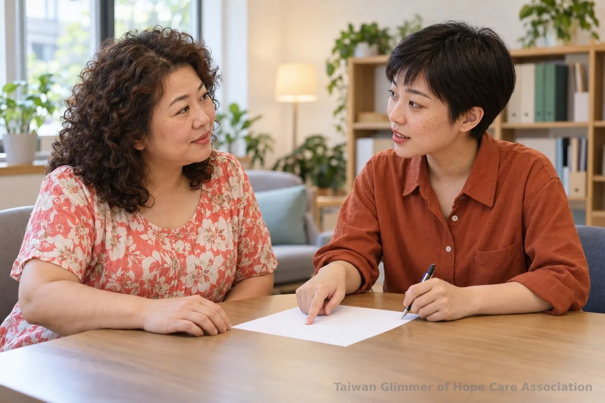
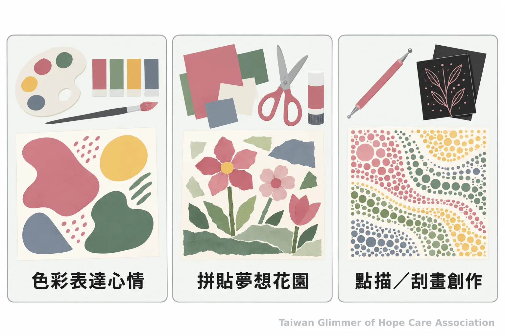
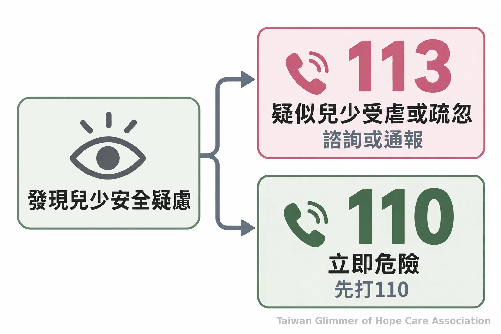

兒少社區陪伴怎麼接續？認識公部門、在地據點與求助方式
從社福中心的需求評估到民間據點的日常陪伴，認識兒少支持如何在社區接續，也了解微光的在地小衛星與113、110求助方式。
脆弱家庭與社會安全網｜系列四之 5
兒少的支持需要不同角色一起接續：公部門評估需求、處理保護事項並連結服務；民間團體和社區據點則依自己的服務內容，提供日常活動與陪伴。認識彼此的工作範圍，遇到需要時才知道可以找誰，也不會讓志工承擔超出角色的責任。
公部門與社區各自負責什麼？
社福中心評估家庭需求、提供服務或媒合資源；民間據點依服務內容提供日常支持，兒少保護疑慮則交由正式窗口處理。
衛生福利部說明，社會福利服務中心是社區福利服務窗口，會評估家庭整體需求；面對多重需求時，也能連結不同服務資源並追蹤服務情形。社區居民若想了解可用資源，可以先詢問所在地的社福中心。衛福部也說明社區支持如何與民間資源連結，詳見社會福利服務中心的角色與功能及社區脆弱家庭服務與資源連結。
社區據點讓活動走進孩子熟悉的生活範圍，提供參與與相處的機會。它的服務對象、時間和內容依各團體安排而異，應向據點確認。這些日常支持與公部門職責不同，不能取代正式評估、保護處理或緊急應變。想進一步了解社區兒少據點與教會陪伴，可閱讀兒少據點的陪伴與安全規劃；脆弱家庭支持和兒少保護的服務範圍，也可參考兩種服務如何分工。

微光如何在地陪伴孩子？
微光以「在地小衛星」方式，與已有照顧脆弱家庭孩子的在地單位合作開課，目前有瑞芳、板橋與中壢三個據點。
瑞芳愛鄰據點是微光的起點，第一個兒童繪畫班於2025年8月在此開課，合作單位為愛鄰希望關懷協會。板橋明穗據點與明穗教會合作，孩子年齡從幼稚園到國二；中壢宣愛據點與桃園市宣愛社區關懷協會合作，於2026年9月開課，是微光在桃園的第一個據點，參與孩子為小學到國中。據點持續增加中，各地開課資訊仍以協會公告為準。
每個據點每月有一堂藝術陪伴課。育妏老師帶領瑞芳和中壢，姚老師帶領板橋。課程從藝術家作品引出情緒主題，孩子可以自由選擇表達方式，不以畫得像不像或好不好比較。課程包括「心情的顏色」、夏卡爾的夢想花園與壓力怪獸、秀拉點描法、馬蒂斯拼貼和刮畫；課末也留時間讓孩子分享作品、說出自己喜歡的部分。
協會理事長林秀霞說：「我就結合散居在各地的小小教會團體，然後一個班、兩個班，一個班、一個班地複製下去。」這句話談的是據點逐步拓展的方向。課堂外，微光安排孩子看展，也在2026年6月舉辦《微光童心・看見希望》作品展，讓孩子有分享創作的機會。
照片與紀錄，請見〈桃園第一個據點開課：中壢宣愛「心情的顏色」〉、〈瑞芳愛鄰據點：跟著夏卡爾，飛進我的夢想花園〉、〈板橋明穗據點：用馬蒂斯的拼貼，做一張自己的雜誌封面〉。

發現兒少安全疑慮時怎麼做？
疑似兒少受虐、疏忽或其他保護疑慮，可撥113諮詢或通報；若有立即人身安全危險，先撥110。
衛生福利部表示，113保護專線全年無休，受理兒少保護等事件的通報與求助諮詢。聯絡時可依所知說明人、事、時、地、物；若是緊急危險，先打110。志工與社區成員不自行調查、不判定是否受虐，也不作保護決策；可以先留意當下安全，再把疑慮交給正式窗口處理。更多服務方式見衛福部113保護專線介紹。
涉及兒少保護事件時，公開內容也要保護孩子身分。《兒童及少年福利與權益保障法》第69條限制報導或記載特定兒少的姓名及足以識別身分的資訊。分享活動照片、作品或經驗前，應確認不會讓外人辨認出孩子，不揭露姓名、學校、家庭狀況或可拼湊身分的細節。法條全文可查全國法規資料庫。

想參與社區陪伴，可以先了解什麼？
先了解據點正在提供的活動與參與方式，再依團體安排加入；遇到保護疑慮時使用正式求助管道。
家長、教師、志工或關心兒少的社區成員，可以從詢問附近有哪些服務開始，再確認活動內容、參與時間與聯絡方式。每個團體的安排不一樣，先了解再參與，較能掌握自己可以做什麼，也清楚何時需要轉由公部門協助。
- 社福中心負責需求評估與資源連結，民間據點依自身服務內容提供日常陪伴。
- 微光目前在瑞芳、板橋和中壢與在地單位合作開課。
- 疑似兒少保護事件撥113諮詢或通報；立即危險撥110。
常見問題
最常需要確認的是服務分工、微光據點資訊，以及遇到安全疑慮時的求助方式。
常見問題
Q1：民間團體可以代替公部門處理兒少保護嗎？
不可以。民間團體依自身服務提供活動或陪伴，正式保護事項應交由主管機關處理。
Q2：微光目前有哪些據點？
瑞芳與愛鄰希望關懷協會合作，板橋與明穗教會合作，中壢與桃園市宣愛社區關懷協會合作。
Q3：遇到兒少安全疑慮應聯絡誰？
疑似受虐或疏忽可撥113；若有立即人身安全危險，先撥110。
參考資料
- 衛生福利部社會及家庭署（2019，更新於2025）。〈社會福利服務中心的角色定位和主要功能為何？〉衛生福利部社會安全網。官方資料
- 衛生福利部保護服務司（2017，更新於2024）。〈113保護專線介紹〉衛生福利部。官方資料
- 衛生福利部社會及家庭署（2019，更新於2021）。〈強化社會安全網如何發掘與服務社區中的脆弱家庭〉衛生福利部社會安全網。官方資料
- 法務部全國法規資料庫（2021）。〈兒童及少年福利與權益保障法〉。法規全文
本文同步刊於 appi.news。